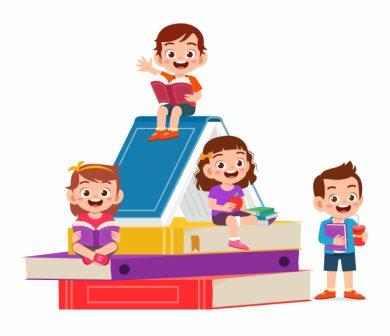

Nous avons réalisé un livret qui va suivre l'élève durant les trois années de maternelle. Il est remis aux famille au moins deux fois par année scolaire.
livret de réussite
Nouveaux programmes 2015, à consulter sur le site du ministère de l'éducation nationale
vous trouverez dans les divers onglets, les activités que je mène avec ma classe.
J'aime beaucoup travailler avec la méthode Narramus pour la compréhension de l'oral et pour l'écriture, je me réfère à la méthode de Danielle Dumont ou Laurence Pierson.
Pour travailler en mathématiques, j'utilise les ouvrages Accès, "découvrir les maths" de Dominique Valentin, "Math à grand pas" ed. Retz et depuis cette année (2020-2021) Cap Math ed. Hatier et la méthode MHM ed. Nathan avec les grandes sections.
Dans l'onglet "jeux interactifs", j'ai répertorié les jeux en ligne que j'ai créé lors du confinement depuis le 16 mars 2020.
Pour m'envoyer un mail